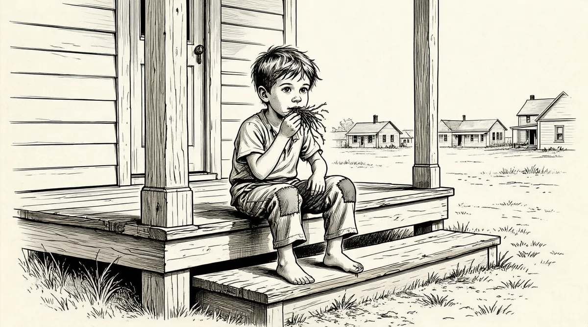

第6章 浴缸障碍赛

20世纪20年代，已经充满泡沫的股票市场吸引了普通民众首次进入投资领域。11927年，霍华德·巴菲特决定进入这个行业，并在联合州立银行谋得一份股票经纪人的工作。
股市的繁荣在两年后结束。1929年10月29日，“黑色星期二”，股市单日市值下跌了140亿美元，24倍于美国政府年度预算的财富在几个小时内蒸发。31929年的市场损失达到了300亿美元，接近美国在“一战”中的开支。4
银行破产和自杀事件接踵而至，人们开始保有现金，没人想要股票。
时隔4个月，我父亲才做成一笔交易。他的第一笔佣金是5美元。我母亲常常在晚上陪我父亲坐着电车出门，当父亲拜访某人的时候，母亲则在外等候，为的只是当我父亲回家的时候不会过于灰心丧气。
股票市场崩溃10个月后，即1930年8月30日，霍华德·巴菲特家的第二个孩子沃伦·巴菲特出生了，比预产期早了5周。
焦虑不安的霍华德去见他的父亲，希望能在家庭杂货店里找个活儿干。巴菲特家的所有成员每周都会在杂货店干活儿，即使是那些有工作的人。但只有霍华德的弟弟弗雷德在店里全职工作，并领取微薄的薪水。所以，欧内斯特告诉霍华德，他已经没钱再雇一个儿子了。5
从某种意义上讲，霍华德得到了解脱。他从杂货店中“逃离”，再也不用回去。6但他又担心他的家人会挨饿。“别担心食物，霍华德，”父亲告诉他，“我来支付你的账单。”
“这就是我的祖父，”沃伦说，“我来支付你的账单。”欧内斯特不是不爱他的家人，“你只是希望他能更经常表达出他的爱”。
“我想你最好还是回西点镇的家去，”霍华德告诉他的妻子，“至少你能吃上一日三餐。”但是利拉没有回去。她步行到罗伯特家的奶制品商店支付账单，这样能节省电车费。她开始脱离她的教会圈子，因为轮到她提供咖啡的时候，她无力支付相应的29美分。7为了确保霍华德有吃的，她有时宁愿不吃饭。8
沃伦周岁生日前两周的一个周六，人们排着长队，在酷暑中汗流浃背，等候着拿回他们存在当地银行的钱。他们从清晨等到晚上10点，缓慢地向柜台移动脚步，把排在队列前的人数了又数，默默地不断祈祷：“求你了，上帝，轮到我的时候，让银行里剩点儿钱吧。”9
不是所有人的祷告都被上帝听到了。那个月有4家州立银行倒闭，储户分文未得。霍华德·巴菲特的雇主联合州立银行就是倒闭的银行之一。10沃伦不止一次说起这段故事：“1931年8月15日，我父亲去银行，两天前是他的生日。银行已经倒闭。他失业了，他的钱还在银行里，而他有两个嗷嗷待哺的孩子。11他不知道怎么办，也找不到其他的工作。”
不过，两周时间内，霍华德和两个合伙人卡尔·福克和乔治·斯克莱尼卡签下协议，开了一家股票经纪行——巴菲特–斯克莱尼卡公司。12这是一个特立独行的决定——在没人想买股票的时候开一家股票经纪行。
三周之后，英国脱离了金本位制。这意味着，为了防止银行倒闭，深陷债务危机的国家只会发行更多的钱来偿还债务。这是一个只有政府能实施的巧妙诡计。在那个年代，美元拥有最广泛的认可度和被接受度，而现在的情况似乎是美国在对外宣布：“我们将要开出空头支票，你们要么接受，要么自己看着办。”这个“声明”立即毁掉了那些正规、信誉良好的机构，全世界的金融市场大跳水。
已经“伤风”的美国经济开始“咳嗽”，然后增长停滞，接着开始进行“自由落体运动”。一批银行被快速地吸入经济增长的真空地带，纷纷宣告破产。一个城市接一个城市，储户们拼命地挤到银行出纳窗口，却又被打发走。13但是，在这场大灾难中，霍华德的公司成功了。他最初的客户大多是亲朋好友。他向他们出售安全的证券，比如公共事业股票和市政债券。在经纪行第一个月的营业中，金融恐慌弥漫于全国，他却赚了400美元，经纪行赢利了。14在之后的几个月，即使人们的储蓄蒸发，也不再相信银行，霍华德还是坚持进行同一类保守的投资，这使他的客户开始增多，生意也开始做大。15
霍华德家的收入和财富开始出现转机。在沃伦·巴菲特满两岁后不久，20个月大的小查尔斯·林德伯格被绑架，并于1932年3月被杀害。根据评论家孟肯的说法，“孤鹰”之子被绑架是“经济复苏以后最轰动的一件事”。全国突然患上了“绑架恐惧症”，所有父母都流露出对孩子会遭受绑架的恐惧，巴菲特家也不例外。16就在这个时候，霍华德患上了某种非常严重的疾病，利拉不得不叫来救护车，梅约诊所最后诊断他的心脏出了问题。17从那个时候起，他的生活起居就受到限制：他不能举重物，不能跑步，不能游泳。利拉的生活更是围着霍华德转——这位迷人的“王子”曾解救她脱离排印报纸的悲惨命运，一想到霍华德可能出什么事，利拉就会被吓坏。
沃伦已经长成一个谨慎早熟的孩子。他学走路的时候总是弯曲着膝盖，靠近地面。母亲带他去教堂参加定期聚会时，他很乐意静静待在母亲的旁边。母亲随手给他一个玩具——一把牙刷——就能让他高兴。沃伦很安静地盯着牙刷，一盯就是两个小时。18当沃伦盯着一行一列的牙刷毛时，他都在想什么呢？
那年（1932年）11月，美国还处于危机之中，富兰克林·罗斯福被选为美国总统。霍华德认定，这个属于上层特权阶级的人对普通民众的生活一无所知，他会弄脏国家的货币，并把美元引向灾难。19霍华德在阁楼上放了一大袋糖，以防备出现最糟糕的情况。直到这个时候，霍华德看起来还像穿着西装、孩子气的超人，带着真挚的微笑，态度亲切。但是，当霍华德谈到政治的时候——在晚饭时评论当天最热点的新闻——他会变得暴跳如雷。霍华德情绪激昂地说，可怕之事将降临到这个由民主党主导白宫的国家头上，这个时候，多丽丝和沃伦可能并不懂霍华德在说些什么。但是，“社会主义”之类的字眼开始嵌入孩子们的大脑。吃过晚饭后，他们会看着令人敬畏的父亲坐在客厅的红色皮椅上休息，椅子旁边放着收音机，霍华德会一连好几小时都埋头看他的晚报和杂志，完全不理会其他事情。
在巴菲特家里，政治、金钱和哲学是晚餐时经常讨论的话题，但是家庭感情却不是。20即使在那个父母对子女感情含蓄的年代，霍华德和利拉也以缺乏温情而出名。巴菲特家没人会说“我爱你”，也没有人会抱孩子到床上入睡，并亲吻他们。
不过，对外人来说，利拉的表现堪称一位完美的母亲和妻子。人们记得她的活力、乐观、母性和甜美，甚至“滔滔不绝的说话方式”。21利拉喜欢不停地讲她过去的事，她会把不太光彩的地方遮掩过去，将自己说成是了不起的基督徒父母养大的幸运儿。她最喜欢说的事是她和霍华德曾做出的“牺牲”——她因为大学学费而错过的3年，霍华德经纪行刚起步时颗粒无收的4个月，以及在此期间她为了省车费而步行到奶制品店。利拉经常会谈到持续很长时间的“神经痛”（有时被误以为偏头痛），她认为病痛是小时候待在发出巨响的报纸印刷机旁边的结果。22虽然如此，她的一举一动仿佛表示她必须做所有的事，而且她会让自己非常辛苦和忙碌——桥牌茶会、煎牛排、生日会和周年纪念日、拜访邻居，以及准备教堂晚餐。相比其他人，利拉更多地拜访邻居、烘烤饼干，记更多的笔记。在怀孕期间，她还曾自己动手给家人做饭，并试着通过闻肥皂的气味来压制清晨的呕吐。23她的第一原则是：一切为了霍华德。“她把自己钉在了十字架上。”她的妯娌凯蒂·巴菲特说。24
然而，利拉的责任感和牺牲精神对应着另一种含义：责备和羞愧。当霍华德早上乘车上班之后，多丽丝和沃伦会玩耍或者穿衣打扮，而利拉突然间可能冲着他们发脾气。利拉的音调可能事先透露出会发火的迹象，但大多数情况下，一切的发生毫无征兆。
我们可能做了什么或者说了什么，然后有那么一瞬间她的脾气就爆发了，没有消停和减弱的迹象。你过去犯的全部错误都会被翻出来。事情就这么无休无止。我母亲有时会把这归因于神经痛，但是她在外从未发作过。
盛怒之下的利拉会不停地责骂孩子，内容千篇一律：他们的生活显然来自她做出的牺牲；他们一无是处、不知感激、自私自利，他们应该觉得羞愧；她会挑剔每个真正或想象出来的错误；她几乎总是冲着多丽丝长篇大论，而且会把同样的话说上至少一个小时，有时还长达两个小时。沃伦说，直到两个孩子“认错”、流下无助的眼泪，她才结束。多丽丝说：“她不把你说哭就不满意。”沃伦无奈地看着利拉脾气大作，没有能力保护多丽丝，并且得竭尽全力地避免自己成为目标。很显然，利拉的攻击是故意的，她在一定程度上能够控制他们，但是，作为母亲，她如何看待自己的行为外人不得而知。不过，无论利拉怎么看待自己的所作所为，到沃伦3岁、妹妹罗伯塔（昵称伯蒂）出生的时候，对沃伦和多丽丝而言，“一切都已经回不去了”。他们在心理上已经受到了伤害。
孩子们从未向父亲求助，即使他们知道父亲也了解母亲的坏脾气。霍华德可能会对他们说，“妈妈要大发雷霆了。”这是在提醒利拉要发火了，但他不会干预。不过，利拉经常会在霍华德的听力范围之外发作，而且不会冲着霍华德。因此，在某种意义上，霍华德是孩子们的保护者。虽然他没法使他们免于母亲的盛怒，但他依然意味着安全，因为他在旁边的时候，孩子们就很安全。
巴克大街的白色小平房之外，内布拉斯加已经滑向了违法乱纪的深渊，奥马哈猖獗的私酒贩卖一直持续到沃伦3岁时。25在乡下，农田分文不值，以农田为抵押品的农民面临着抵押品赎回权的取消，他们开始不服管制，发起反抗。265000名农民在林肯市的州议会大厦外游行，直到惊慌失措的立法者们急急忙忙地通过了抵押贷款延期偿还的法案。27
1933年11月，寒风刮过美国西部炎热的沙丘，以雷霆万钧之势掀起表土层，形成巨大的旋风，向美国东部推进，以每小时60英里的速度，一直抵达纽约。这场暴风所到之处，玻璃窗户被撞碎，路上的车辆被吹翻。《纽约时报》将之比作喀拉喀托火山的爆发，将要持续好几年的沙尘天气开始了。28
在20世纪最严重的干旱期间，沙砾吹打着房屋的墙面漆，在汽车玻璃上留下划痕，中西部人都把家当作避难所。利拉每天早上都要打扫门廊的沙尘。沃伦4岁生日那天，一场肆虐的沙尘暴在巴菲特家的前门门廊上留下一层沙尘，吹走了餐桌上的纸盘子和餐巾纸。29
沙尘天气出现后，随之而来的就是酷热。1934年的夏天，奥马哈的温度达到了118华氏度（约47.7摄氏度）。内布拉斯加的一位农民在找了好几天之后，在一处收割后的偏远农田的裂缝里找到了他家的奶牛，土地被烤得裂开，牛被夹在里面了。30平原上的居民们讲述着夸张的故事，有个人被一滴水击中脸部，然后昏死过去，得用三桶沙才能救醒。人们睡在后院，在中心高中的地上以及奥马哈乔斯林艺术博物馆的草地上搭帐篷，以免被自家的“火炉”给烤熟了。沃伦想盖着被水浸过的床单睡觉，但也只是徒劳，任何东西都无法给升到他二楼房间的炽热空气降温。
因为1934年的干旱和高温创了纪录，31铺天盖地的蝗虫来袭，把烤干的玉米和小麦一顿狂吃，就剩下一地的短茬儿。32利拉的父亲斯塔尔那年中风卧床不起，沃伦到西点镇看望外祖父的时候，还能听到蝗虫吞噬庄稼的嗡嗡声。最可怕的时候，蝗虫吃栅栏桩和晾在晾衣绳上的衣物，还一团团地沾在拖拉机发动机上；厚厚的一层蝗虫，遮天蔽日，足以遮挡汽车司机的视线。33
事实上，20世纪30年代初，除了恐惧本身外，还发生了更多可怕的事情，那就是经济状况恶化。34很多人仿效当时最臭名昭著的强盗——阿尔·卡彭、约翰·迪林杰和长了一张娃娃脸的尼尔森——在中西部四处出没，掠夺勉力支撑的银行。35父母亲们都很担心那些经过城镇、裹沙带尘的流浪者和吉卜赛人。偶尔出现的狂犬病也令恐惧的家长把孩子们关在家里。出于对小儿麻痹症的担心，公共游泳池在夏季炎热的日子都被关闭。父母们不时警告他们的孩子，如果他们的嘴唇碰到了公共喷泉，那他们可能就会被装上人工呼吸器。36
不过，内布拉斯加人从出生起就受到训练，以坚定的乐观态度来应对灾难。这些年的沙尘和干旱构成了中西部生活的背景。在这个龙卷风肆虐而且风力足以把火车吹离铁轨的地方，孩子们在成长过程中习惯了恶劣古怪的天气。37
巴菲特家的三个孩子照常上学，和朋友一起玩耍；在附近野餐聚会的时候，和很多孩子一起在100华氏度（约37.8摄氏度）的高温下到处跑。而他们的父亲穿着西装，母亲还穿着外套和袜子。
很多邻居的日子可能不太好过，他们的生活水准在降低；但是霍华德，这位杂货店老板的儿子，让他的家人过上了比大部分中产阶级都要舒适的日子。“即使是在艰难的日子里，我们的生活水平也在稳步地提高，”霍华德回忆说，“以一种非常适度的方式。”他对此很谦虚。当50个男人排队竞争一份周薪17美元的工作时——为巴菲特父子杂货店开橙色卡车运送货物——霍华德坚持每家每户上门推销，他的股票经纪公司——如今被叫作巴菲特公司——发展得很成功。38奥马哈在1935年电车罢工和骚乱期间曾实行过短期的戒严，不过，霍华德已经购买了一辆崭新的别克。他成为当地共和党政治活动的积极分子。多丽丝一直以来很崇拜父亲，她7岁就开始构思父亲未来的传记，她的一本笔记本封面上写着“政治家霍华德·巴菲特”。39一年后，美国还处于大萧条的阴影之中，而霍华德为家人在奥马哈的郊区邓迪建了一栋更大的房子——红砖砌成，两层高，都铎式风格。40
当全家准备搬迁的时候，利拉得知37岁的弟弟马里昂——已经是纽约一名成功的律师——患上了癌症。“我的舅舅马里昂是我母亲家的骄傲和快乐之源。”沃伦·巴菲特说。马里昂没有精神错乱的遗传，是斯塔尔家传宗接代的主要希望。41马里昂于11月去世，没有子女，终止了斯塔尔家族传宗接代的希望。另一条坏消息是，那一年利拉的父亲约翰·斯塔尔又一次中风，身体非常虚弱。在家照顾父亲的伯妮丝似乎在沮丧消沉中越陷越深。当教师的姐姐伊迪丝——家里最漂亮、最敢作敢为的女孩——发誓要一直单身到30多岁，或是等到伯妮丝结婚。不过，精明、有心机的利拉不愿被家里的悲戚之事捆住手脚，不管发生什么事，她都要实现自己的目标——她想要一个正常家庭，过正常生活。42利拉计划着迁居并购置新家具，她雇用了一位兼职管家艾塞尔·克伦普，这可是生活的一大进步。
如今，利拉成了一个更富裕家庭里更有经验的母亲。随着她发怒频率的降低，她和小女儿伯蒂的关系更加健康。伯蒂知道母亲的坏脾气，但却总说自己感受到了母亲对她的爱。沃伦和多丽丝从不这样认为，利拉对伯蒂明显的母爱无助于减轻他们的不受重视感。43
1936年11月，罗斯福成功连任美国总统。霍华德唯一的安慰就是罗斯福在下一个4年就没戏了。每晚，霍华德看着自己的保守派杂志，孩子们听着收音机、玩儿游戏或是唱赞美诗，利拉会用家里添置的最大物件为他们伴奏——一台管风琴，就像利拉母亲曾弹过的那台一样。
巴菲特家有了新房子，也有一两件诸如管风琴之类的奢侈品。虽然这表明他们的日子越过越好，但是，利拉总是给孩子们买一些无趣和不起眼的礼物，大减价时出售的不能退的衣服和生活必需品——丝毫不符合孩子们的愿望。沃伦有一列小小的单轨火车，他非常想要另一套更加精致的火车——他在市区的布兰戴斯百货公司里看到的那款——转动着车轮，经过信号灯，翻越雪山，潜入隧道，飞奔过小小的村落，消失进松林。不过，买一本画有这列火车的商品目录就让沃伦很满足了。
如果你是一个小孩子，只有一列小小的椭圆轨道的火车。盯着这列令人着迷的火车，你会非常高兴用1毛钱买一本有火车模型的目录，然后就坐在那里幻想。
沃伦是个内向的小孩，他能数小时沉迷在画有火车模型的目录中。不过，作为一个快上小学的孩子，他有时不会表露出自己的情感。而他在朋友杰克·弗斯特家则会流露出对杰克善良的母亲海兹尔的依恋。日子一长，他逐渐养成习惯，在邻居和亲戚家里待上很长的时间。44沃伦最喜欢父亲的妹妹艾丽斯，一位高个子女士，一直未婚，和沃伦的祖父住在家里，教授家政课。她让沃伦感到很温暖，她对他做的一切事情都很有兴趣，想方设法鼓励他和启发他。
沃伦上学前班的时候，45他的爱好和兴趣都围绕着数字打转。6岁左右，他着迷于用秒来精确记录时间，非常想要得到一只秒表。艾丽斯并不是简单地无条件送给沃伦这份重要的礼物，她想得更周到。“她很爱我，”沃伦说，“但是她仍然会附加一两个条件，比如我得吃龙须菜之类的东西，礼物能激发我吃这些东西的动机。而我最终得到了一只秒表。”
沃伦拿着他的秒表，叫他的姐姐妹妹和他一起到浴室，观看他发明的新游戏。46他在浴缸里装满水，拾起他的弹珠。每个弹珠都有自己的名字。他把它们放在浴缸一头的水平边缘上，排成一排。然后，他把弹珠扫进浴缸，同时按下秒表。它们沿着瓷制浴缸的斜面向下滚，发出碰撞声，然后击中水面，落进水中。这些弹珠相互追赶，向浴缸塞子奔去。当第一个弹珠到达目的地时，沃伦就按下秒表，宣布它是胜利者。他的姐姐妹妹看着他一遍又一遍地让弹珠赛跑，想要提高它们的成绩。弹珠不会疲倦，秒表也不会出错，还有沃伦，似乎从不会对这种重复的游戏感到厌倦——不过，他的观众可不像他。
沃伦随时随地都在思考数字，即使在教堂也这样。他喜欢听布道，但其他活动让他感到无聊。他会收集赞美诗的作曲者的出生、死亡日期来计算他们的寿命，以此消磨时间。他认为，宗教人士应该因为他们的信仰和忠诚而得到回报。他假设赞美诗作者的寿命长于平均寿命，活得比平均年龄长对他来说是个很重要的目标。但是他发现，虔诚对长寿无所裨益。因为体会不到宗教对个人的仁慈和恩惠，沃伦开始对宗教有所怀疑。
不过，浴缸障碍赛和他所收集的赞美诗作者的信息教会了他一些其他的事情，一些有价值的事。他学会了计算概率。他环视周围，到处都存在可以计算概率的事物，关键就在于收集信息，你能够找到多少是多少，尽你所能。
[1]金本位制下，政府财政部所持有的黄金数量决定了流通中的美元数量。金本位制可以防止政府大量印刷钞票触发通货膨胀的行为。——译者注
[2]“孤鹰”是指查尔斯·林德伯格，于1927年第一次成功地不间断飞行跨越大西洋。——译者注